UnchartedX
The Architecture of Machu Picchu - Part 2
Ben · 47 min · watch on YouTube · summarised 2026-09-30
Part two of two, and the half that carries the stonework. Part one is the history — how the site came to notice and what the accepted date rests on — and Ben says at the start of this one that he assumes you have seen it. He also flags the change of register: "this video will be a little different, it's a little less formal."
It is organised as a walk through four areas: the terraces, the urban area, Huayna Picchu, and the megalithic core. Two of those carry arguments; the last eight minutes are advice on planning a visit and are not summarised here.
The terraces, and where Ben stops short
The terracing is the one part of the site Ben hands almost entirely to the Inca: "I think that 99% of the terracing that you find throughout the Sacred Valley is the Ukun Pacha or the Incan style architecture" 05:52–06:20. A Peruvian guide sets out the agricultural system 02:23–05:52 — three bands of terracing at roughly 2,100 m, 2,700 m and 3,600 m, each growing a different crop range at the same time of year, with the lowest producing tropical fruit and the highest only potatoes. He adds that one theory has the Machu Picchu terraces used as a single large garden for coca, the leaf being smaller and, on his account, stronger at this altitude than lower down.
Where Ben departs is on a subset of the retaining walls: some are "just absolutely huge relative to the rest of the work around the site", imprecise but massive, and made of the same white granite as the core. He marks the status of this himself, twice in one sentence 07:16–07:45:
"My guess on these imprecise but massive retaining walls — and a guess is really all that it is — is that I think these are older, and that they're part of the original landscaping."
The reason he gives is that very large stones in retaining walls and terracing are not a common Inca approach, while conceding that the Inca were recorded moving large stones.
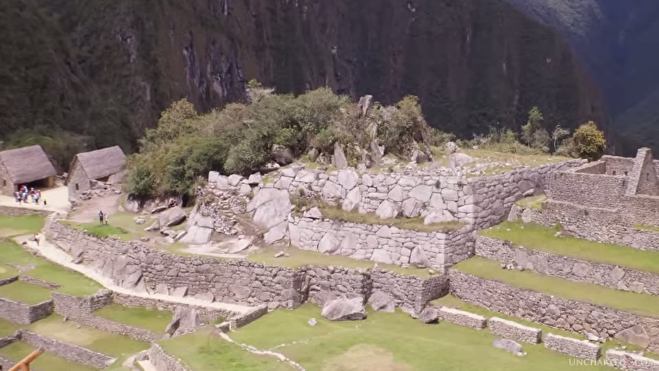
Retaining walls at the site that are much larger and rougher than the terracing around them.
The chroniclers, and what they actually describe
This is the substantial section, and it is unusual because it takes on the evidence normally cited against the argument rather than ignoring it 09:56–15:07. Sixteenth-century Spaniards watched Inca stonework in progress and wrote it down. Those accounts are routinely used as proof the Inca built these sites. Ben's reading is that they describe repair and restoration.
The quotations, as given:
| who | what is quoted |
|---|---|
| Juan de Betanzos | "[He] ordered the entire crowd to pull the ropes with which it was tied" |
| Garcilaso de la Vega | "They did not have any ingenuity to climb and descend the stones. They did everything by force of arms" |
| Garcilaso de la Vega, on tools | "The stonemasons had no other instruments to carve the stones than some black pebbles they called hihuana, with which they carve them by crushing rather than cutting" |
| Gutiérrez de Santa Clara | they stacked larger stones by building earthen ramps, hauling the stone up by main force, then removing the ramp |
Ben's summary of the method they describe: ropes of llama hair and leather, a few thousand people pulling, no levers, no wheels, no rollers, no logs, and shaping by striking stone with stone. His position on what that can account for is explicit: it "can really not explain that incredible precision that we see in a lot of the tight-fitting megalithic walls," but "it certainly does explain how the Ukun Pacha work or the Incan style work might well have been done."
He also does not claim the Inca rebuilt everything: "I'm not saying that they rebuilt all of the megalithic work. I do think that some parts of the original megalithic installations survived."
The second half of the section is a figure from the same chroniclers that he says is reported less often: that the nearest quarry for Sacsayhuamán was about 25 km away and the farthest around 75 km, across terrain above 10,000 ft. Set beside a civilisation he gives roughly 150 years at its peak, he puts the difficulty as a question of imagination rather than of arithmetic. He names the comparison he has in mind — the same "national project, beer and blankets" account used for the Great Pyramid, which he attributes to Zahi Hawass.
The succession argument, brought in from Cusco
A clip of Brien Foerster that Ben says he has used before 15:34–18:26. The argument is about sequence rather than stonework, and it runs:
- the Inca were driven out of the Lake Titicaca region by the Aymara about a thousand years ago
- following a road north, they met a megalithic gate called Anta Punku about an hour's drive short of Cusco, then more megalithic structures, then Cusco itself — which they found abandoned and megalithic
- the Coricancha already stood; the first ruler judged it too significant to live in and took a megalithic ruin on the hill instead, ordering it rebuilt as his palace
- under the panaca system each successive high Inca had to establish his own household rather than inherit his father's, so each took another megalithic ruin and rebuilt it
- by the eighth high Inca there were none left, so the ninth, tenth and eleventh built from scratch — in small blocks and adobe, with no megalithic work at all
Foerster's conclusion, as he puts it: if the Inca were responsible for the megalithic work, they would have had to begin with profound capability and "slid downhill for the next five hundred years, which is not the case."
The urban area, and the argument Ben makes against himself
A couple of dozen dwellings, which Ben reads as well-made Inca work, in many cases on megalithic foundations. Bingham's description is quoted 18:26–19:22: houses "of a story and a half in height with gable ends," the gables "marked by cylindrical projecting stones carrying out the idea of the wooden rafters which have disappeared."
The video shows what Bingham meant, on a reconstructed roof: rafters lashed with cord to the cylindrical stones projecting from the gable.
Those stones turn out to be the interesting thing, because the same shape — cylindrical, sometimes square — also appears in the megalithic core 20:16–21:12, including inside the chamber beneath the Sun Temple, where a rafter would have nothing to hold up. Ben notes they also turn up loose on the ground and used as ordinary filler in rough walls, and says he is not sure what to make of that.
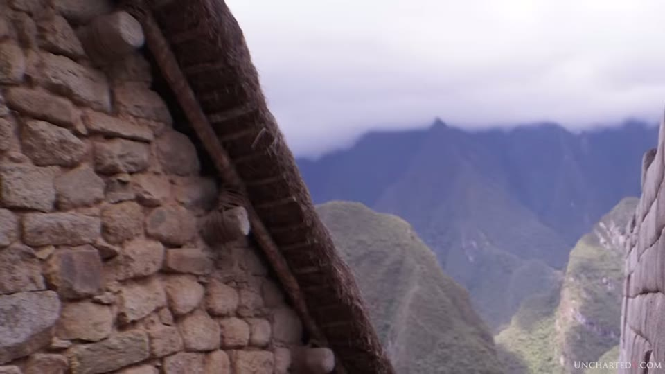
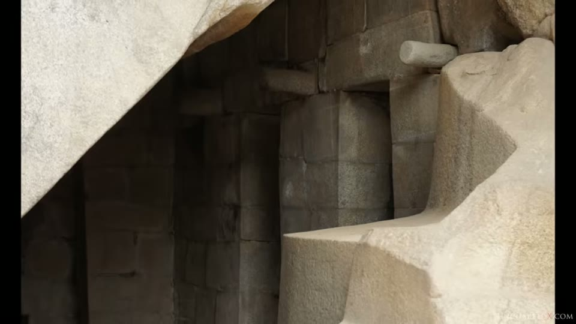
The same projecting cylindrical form in the rough buildings and in the megalithic work.
Then he states the objection to his own case, which is the part of this video worth reading closely:
"I do want to acknowledge that there is an alternative argument to be made here, because we have the same shapes reflected in the Incan style architecture and in the megalithic architecture… that could be used as an argument to suggest that these same people or the same culture built all of this same architecture."
He says he does not think so, gives his reasons — the Inca origin stories, the Younger Dryas, the extended human timeline, and the gap in technological level between the styles — and then lands here 21:12–22:08:
"Ultimately I think the only answer somebody can come to today is really: I don't know. There just isn't enough evidence to conclusively prove this one way or the other… when it comes to South America this is all really circumstantial evidence."
The Sun Temple
The curved wall, which Ben says is rare in Peru though not unheard of — he offers the Coricancha as the other example — and which he notes is called a sun temple on the strength of that curve rather than on any known original function: "we really have no way of knowing whether or not that had anything to do with their original purpose" 22:08–22:40. He says the building casts a shadow marking the solstice.
Two observations about its construction 22:36–23:45:
- seen from above and behind, an angle he says visitors rarely take, the wall wraps around a large mass of carved bedrock — Hanan Pacha work — which he reads as the building being built protectively around something older, and which he notes reduces its usefulness as a building
- the top courses have been restored, and the work in them is visibly poorer than what is below
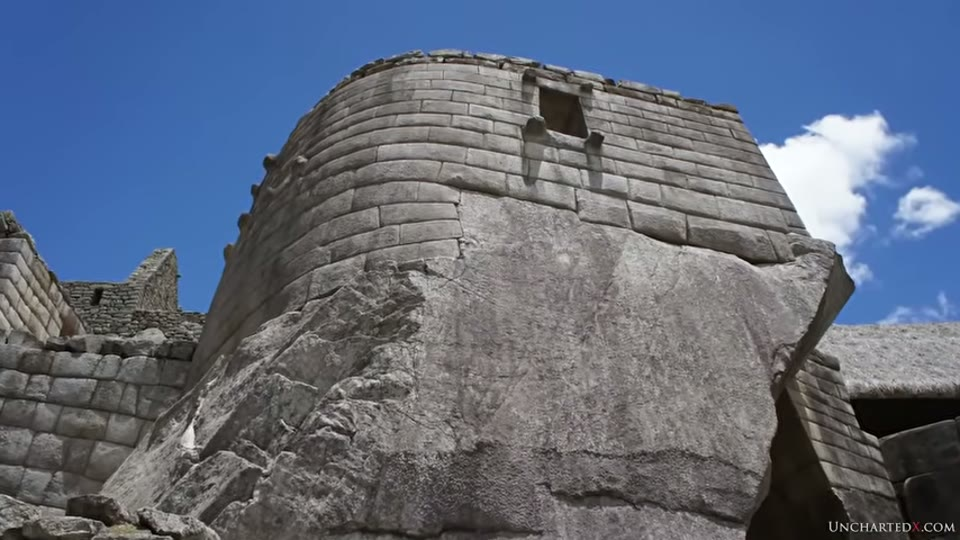
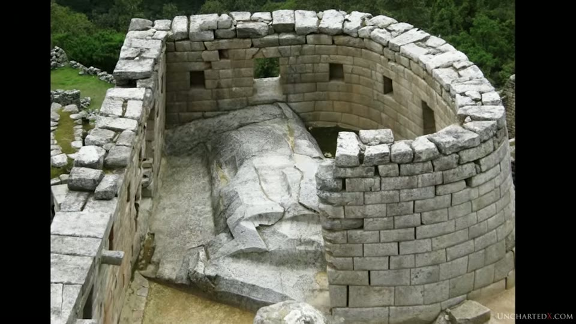
That the curved building was built around an older mass of carved bedrock.
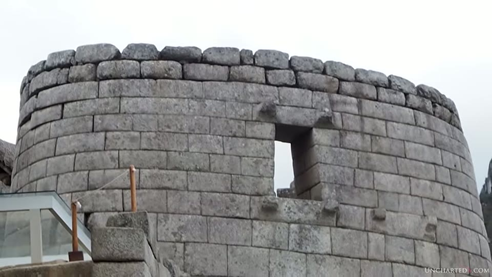
That the top of the building has been rebuilt to a lower standard than the work beneath it.
Underneath it is a chamber of curved and flowing forms merging into the native rock, roped off to visitors now. Ben says he is showing archival photographs of the interior instead, and points out a protruding cylindrical shape in there — the same form as on the house gables, but in a cave, where a rafter explanation does not apply — and something he says resembles an Intihuatana stone, while noting that a stone for tracking the sun is an odd thing to find out of sight of it.

The carved forms merging into the native rock in the chamber below, now closed to visitors.
He also points out what Bingham called the best made wall in all of Machu Picchu, standing in the middle of the urban area 24:30–24:58.
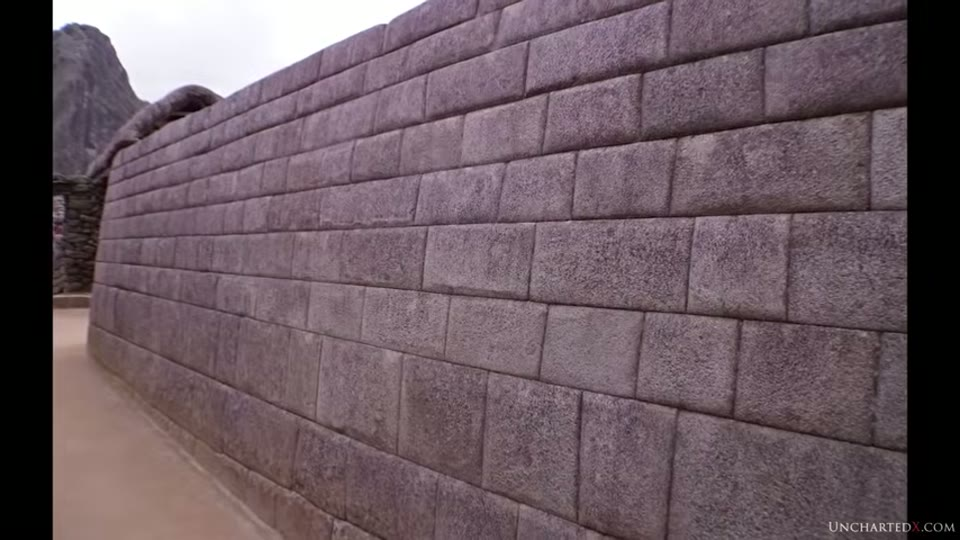
The wall Bingham singled out as the best made on the site.
Water
Carved channels run through the site, some still flowing, with blocks inside the houses shaped as part of the system and stone basins in several structures 24:58–25:53. Ben notes channels emerging from the sides of buried blocks at high levels, which he reads as a deeper layer of construction.
Bingham's conclusion about the water is the checkable part: he traced it to springs perhaps a mile along the mountainside and did not think there was enough of it to support a large population, which Ben offers as a possible reason the site was abandoned before the Spanish arrived.
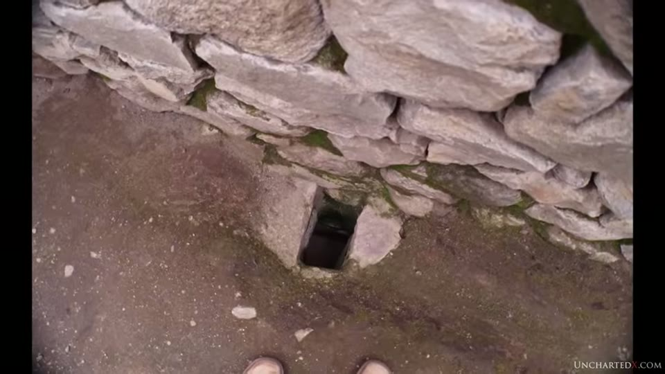
The carved water system, and channels emerging from buried stonework.
Huayna Picchu, and a man falling off it
The peak behind the site carries a carved path, terraces and a few gabled structures, most of it cleared in modern times 26:21–27:18. Ben reads out, at length, the account of Bingham's assistant topographer Heald attempting the climb 28:40–32:50 — cutting through mesquite with a machete, going on ahead of his exhausted crew, and then the fall:
"I was just climbing out on top of the lowest back plate when the grass and soil under my feet let go and I dropped for about 20 feet. There was a slope of about 70 degrees and then a jump of some 200 feet… as I shot down the sloping surface I reached out and with my right hand grasped a mesquite branch that was growing in a crack about five feet above the jump-off… the jerk broke the ligaments holding the outer ends of the clavicle and scapula together."
What Heald reported from that first attempt is worth separating from the story: "On this trip I saw no sign of Inca work except one small ruined wall." He reached the summit about a week later.
The footage running under the reading is of a different place — the Inca bridge, a trail cut along a sheer granite cliff face in the opposite direction from Huayna Picchu, which Ben says plainly at 27:18–28:12.
The Temple of the Three Windows, and how many windows it has
Bingham thought the three windows might connect the building to the Inca origin legend — the three brothers leaving through three windows or caves — and that Machu Picchu might therefore be Tampu-tocco, the mythical place of origin 33:46–35:35. Ben quotes him on it and then disagrees, on geography: Machu Picchu is north of Cusco, and the evidence he cites points to Inca origins to the south-west, toward Titicaca and Tiwanaku.
His second objection is physical and anyone can check it 36:02–36:57. There are more than three windows in the wall. The video shows it directly: three open windows with the valley visible through them, and beside them two further window-shaped openings filled in with masonry. Bingham noticed the same thing and wrote it into a photograph caption:
"An exterior view of part of the Temple of the Three Windows, showing the location of a former window which was filled up at some time in the past, when it was considered suitable to reduce the number of windows in this remarkable structure from five to three. Tradition says that the Incas' ancestors came out of three caves, or windows."
Five reduced to three, on Bingham's own account, in the building whose three windows were his reason for the identification. His caption carries a reference the narration does not read out — (See Markham's "Incas of Peru," Chapter IV.)
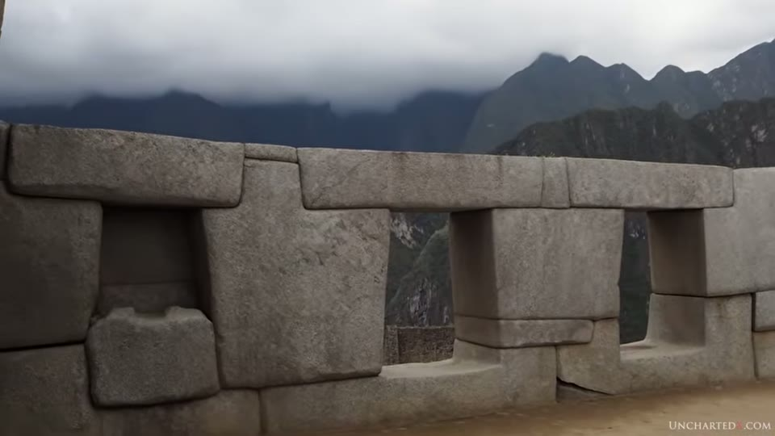
That the Temple of the Three Windows has more than three window openings.

That the reduction from five windows to three was recorded in 1913.
The Intihuatana, and the claim that can be checked twice a year
The highest point on the site, and the video's closing argument 36:57–39:43.
Ben sets out the existing readings — that it is a sundial, or a solstice marker — and argues for a third: that it marks the equinoxes. The chain:
1. the four faces of the stone mark north, south, east and west 2. the top of the stone is not flat; it is tilted by about 13½ degrees 3. Machu Picchu lies at about 13½ degrees south 4. on the equinoxes, with the sun over the top of the stone, it casts no shadow at all
The angled top is visible in the video's own close footage. The other three steps are spoken. What runs under step 4 is a stock astronomy graphic, not UnchartedX's own and not about this site, headed "EQUINOX — From Latin for 'Equal Nights'", whose printed text reads: "At equinox, the sun is overhead at the equator and days and nights are equal in duration."

What the video shows while explaining the equinox.
What runs under step 3 is Google Earth. In the wider view the globe carries its standard latitude lines; in the closer view the site is pinned and labelled, and the pin falls between the gridlines marked S13°02' and S13°09', with Ollantaytambo pinned to the south-east. The spoken figure is "around 13 and a half degrees south".

The latitude of Machu Picchu, as the video displays it.
His own conclusion is stated as a conviction rather than a result — "I'm fairly convinced that this isn't accidental" — and he draws out what he takes to be the chicken-and-egg problem: to cut the angle correctly you would need either to know the site's latitude, or to know the date of the equinoxes and mark the stone when the sun was overhead. He then sets it against the accepted account: a refuge built for one ruler and abandoned inside eighty years, against what he suggests might be a solar observatory used over a longer period. He adds that the stone looks to him like part of a single much larger carving, the platform it stands on included.
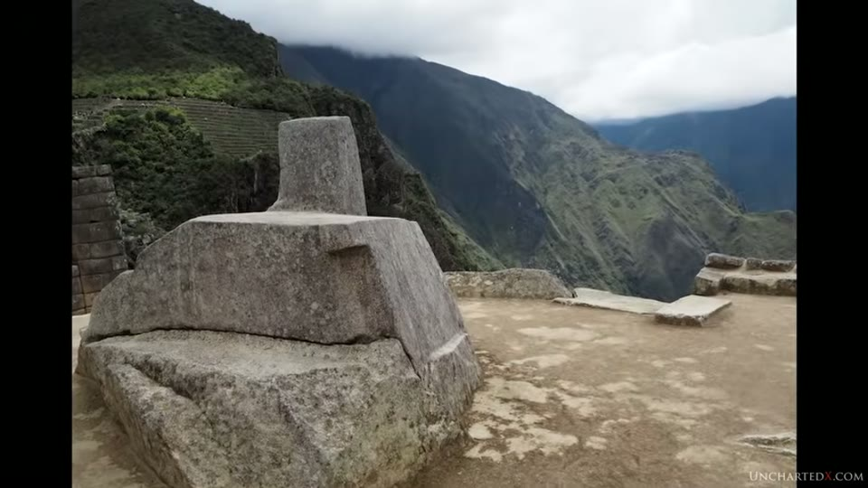
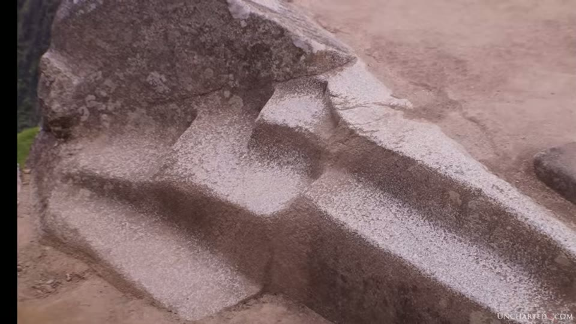
The stone whose angled top is the video's closing argument.
Two things he records around it. Other Intihuatana stones existed — one still stands at Písac — and the rest were destroyed by the Spanish as objects of pagan worship. And the Machu Picchu stone was damaged in 2000, when, he says, a crane being used to film a beer commercial fell on it and chipped one of its edges, prompting local protests.
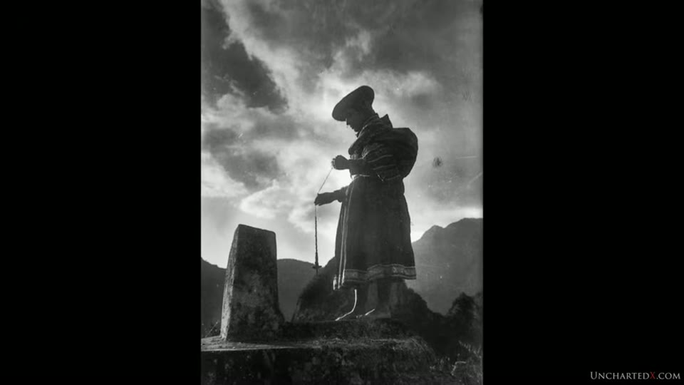
The stone as photographed before it was roped off.
What you can check yourself
- The number of windows in the Temple of the Three Windows. Two blocked frames are visible in the video's own footage beside the three open ones, and Bingham's caption says five were reduced to three. Photographable by anyone standing in the building.
- Bingham's source for the legend, which his caption gives as Markham's Incas of Peru, Chapter IV.
- Whether the Intihuatana casts a shadow at the equinox. The claim is dated — twice a year — located, and falsifiable by anyone standing there with a camera on the day.
- The latitude of Machu Picchu, against the angle claimed for the top of the stone. The video shows a Google Earth view with the site pinned and the latitude grid drawn on it.
- The chronicler passages. Betanzos, Garcilaso de la Vega and Gutiérrez de Santa Clara are all published 16th-century sources; the quoted lines can be found and read in context.
- The quarry distances for Sacsayhuamán, given as about 25 km for the nearest and 75 km for the farthest.
- The top courses of the Sun Temple, where the restoration is said to be visibly poorer than the work below it — and is, in the frames shown.
- The cylindrical projecting stones, and whether the same form appears in both the rough buildings and the megalithic core, including inside a roofed chamber.
- Whether the Inca structures at Cusco attributed to the later rulers are small-block and adobe rather than megalithic, which is the testable half of the succession argument.
What the video does not settle
- Ben says so himself, at length. "The only answer somebody can come to today is really: I don't know." "There isn't enough here to conclusively prove this one way or the other." "A guess is really all that it is." Those are his words about his own position, in three separate places.
- He states the counter-argument to his own case and does not answer it. The same cylindrical stones and window shapes appear in both styles, which he acknowledges could indicate one culture. His reasons for reading it otherwise are the origin stories, the Younger Dryas and the difference in technological level — none of them from this site.
- The 13½-degree tilt is not measured. The angled top is filmed, but no instrument, survey figure or source for the angle appears anywhere in the video.
- The two statements of latitude do not match. The narration gives the site as "around 13 and a half degrees south"; the Google Earth view shown while he says it places the pin between the 13°02' and 13°09' gridlines. The video does not reconcile them, and the argument rests on the tilt and the latitude being the same number.
- The graphic used to explain the equinox is stock footage about the equator. Its printed text says the sun is overhead at the equator; the narration says it is over the top of the stone. No diagram of the stone, the sun angle or the shadow appears.
- The no-shadow effect is described, not shown. No equinox photograph or footage of the stone without a shadow is in the video.
- The solstice shadow at the Sun Temple is asserted the same way, with nothing shown.
- The chronicler quotations carry no edition, translator or page. Ben says he is translating from the original Spanish in the books; which books is not stated.
- The quarry distances are attributed to "these same 16th century chroniclers" without naming which one or where.
- The succession argument arrives entirely inside a clip and is sourced nowhere. The Aymara expulsion a thousand years ago, the panaca rule, and the boundary at the eighth high Inca are all asserted; no chronicler, excavation or publication is named for any of them.
- The images of the chamber beneath the Sun Temple are called archival and are not credited. Who took them or when is not given, a visitor appears in one of them, and the area is inaccessible now, so they cannot be re-shot.
- The photograph of the Intihuatana with a figure beside it is also uncredited and is not dated on screen.
- Heald's report and Ben's description of Huayna Picchu do not say the same thing. Ben describes a path, terraces and buildings on the peak; Heald's first ascent found "no sign of Inca work except one small ruined wall." The video notes that most of it was cleared in modern times but does not reconcile the two accounts directly.
- The beer-commercial crane is given as hearsay — "apparently, according to the story" — with no date beyond the year, source or photograph of the damage.
- Nothing here dates anything. As in part one, no physical dating evidence for the megalithic work is offered, and the video does not claim any.
Names
The 2020 auto-caption track is the unpunctuated kind and mangles the proper nouns, as in part one. Machu Picchu is "much you picked you" throughout and Huayna Picchu is "quiner picked you", "wana picked you" and "Juana picture". Reconstructions flagged here:
| written here | as the captions give it |
|---|---|
| Machu Picchu, Huayna Picchu | "much you picked you", "quiner picked you" |
| Intihuatana | "in - etana", "into Itano", "intuit onna" |
| Hanan Pacha, Ukun Pacha | "Hannan pocha", "oaken putter", "you can pocha" |
| Juan de Betanzos | "Juan de betanzos" |
| Gutiérrez de Santa Clara | "Gutierrez de Santa Clara" |
| Anta Punku | "anti punku" |
| Písac | "P sack", "pisac" |
| Urubamba | "Urim bomba", "Ihram bamboo" |
| Arteaga | "RTA ger", "Artur Hagar" |
| Brien Foerster | "Brian Forrester" |
hihuana, the name Garcilaso gives for the black pebbles used as hammerstones, is spoken once and is a reconstruction from the audio alone. Heald, Bingham's assistant topographer, is given only by surname in the video and no first name is recovered. The guide in the terracing clip is the same one as in part one, given there as "Roy Elio" and still unverified.
One name came off the screen rather than the audio: the editor captions the megalithic core shots "Temple of the 3 Windows", and Bingham's plate is titled "THE TEMPLE OF THE THREE WINDOWS: MACHU PICCHU" with the Markham reference printed beneath it.